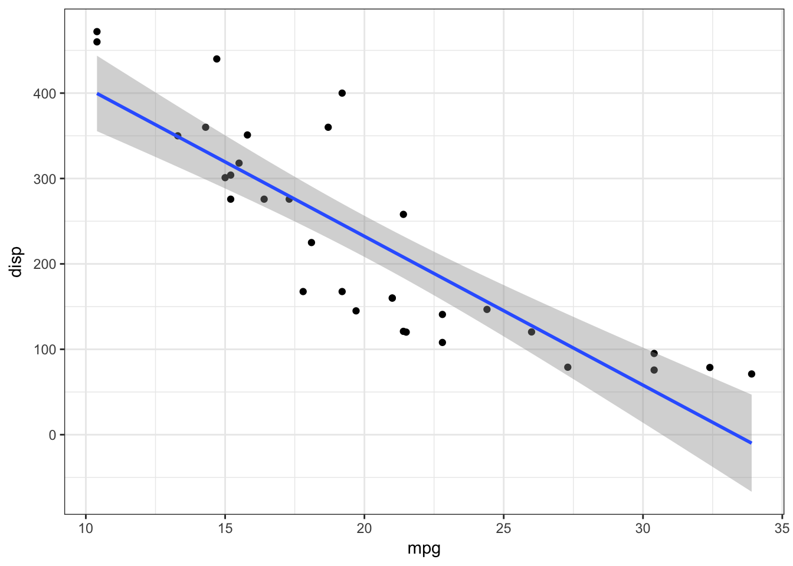
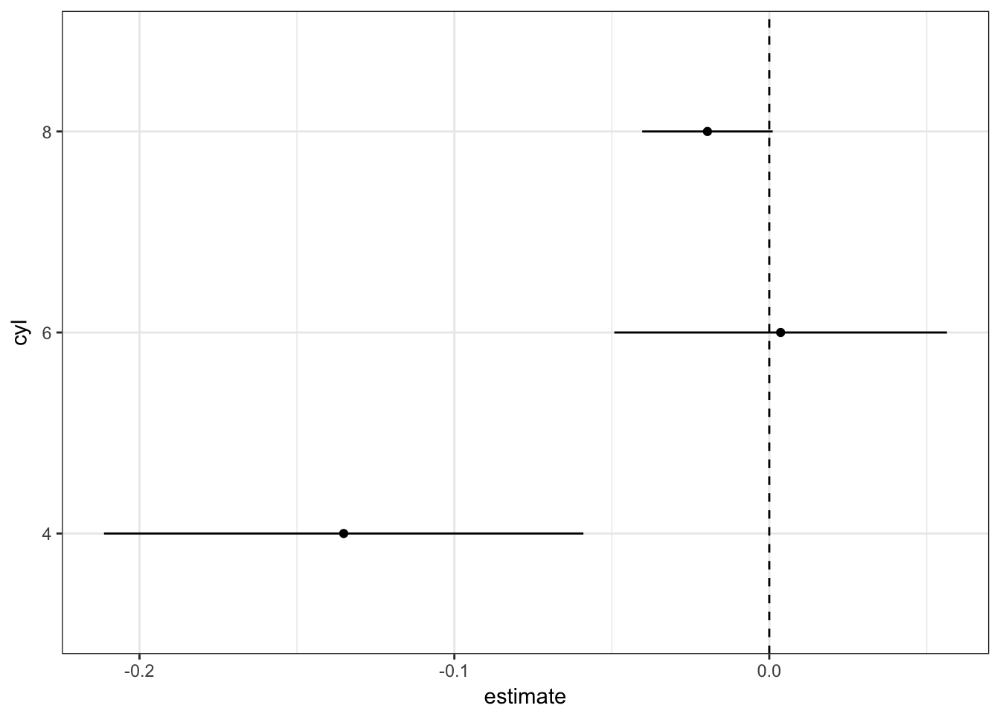
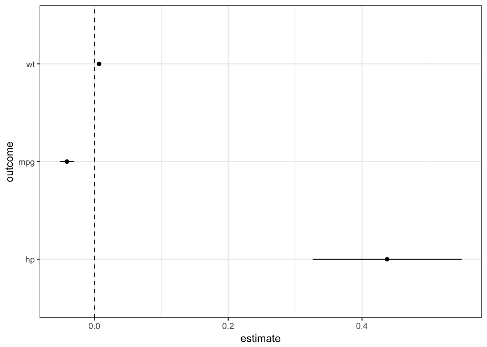

The estimatr package estimates linear and instrumental variable regressions quickly and with robust standard errors. We designed the package to play well with the “tidyverse”, which is a suite of packages developed by RStudio. The main way we accomplish this is making it easy to turn model fits into data.frames, the data format expected by many tidyverse packages. This vignette will show you how to estimatr functions with four tidyverse packages: broom, dplyr, purrr, and ggplot2.
## term estimate std.error p.value ci.lower ci.upper
## 1 (Intercept) 29.59985476 1.490268903 8.189608e-19 26.55631962 32.64338989
## 2 disp -0.04121512 0.005170197 6.743097e-09 -0.05177407 -0.03065617
## df outcome
## 1 30 mpg
## 2 30 mpgThe fit objects is an lm_robust object. When you call tidy(fit) it turns the fit into a dataframe. This function and behavior are explictly modeled on the broom package, a tidyverse package for making model objects into data.frames.
Once the model fits are data.frames, it’s easy to pipe the output into dplyr data manipulation functions:
library(dplyr)
fit %>%
tidy %>%
mutate(t.stat = estimate / std.error,
significant = p.value <= 0.05)## term estimate std.error p.value ci.lower ci.upper
## 1 (Intercept) 29.59985476 1.490268903 8.189608e-19 26.55631962 32.64338989
## 2 disp -0.04121512 0.005170197 6.743097e-09 -0.05177407 -0.03065617
## df outcome t.stat significant
## 1 30 mpg 19.862090 TRUE
## 2 30 mpg -7.971672 TRUEIf you want to overlay a regression model on a scatterplot, the stat_smooth function in ggplot2 is great. But if you run stat_smooth(method = "lm"), ggplot will add a confidence interval based on classical variance calculations. If you want to use robust standard errors (and you almost certainly do, since homoskedasticity is an unnecessary and often implausible assumption), then use stat_smooth(method = "lm_robust").
library(ggplot2)
ggplot(mtcars, aes(mpg, disp)) +
geom_point() +
stat_smooth(method = "lm_robust") +
theme_bw()
Sometimes, we want to run multiple versions of a regression mode, perhaps model on subsets of the data. This code runs three regressions on three subsets of the data and stacks the output into a single data.frame. We use the map function from the purrr package twice.
library(purrr)
gg_df <-
mtcars %>%
split(.$cyl) %>%
map(~ lm_robust(mpg ~ disp, data = .)) %>%
map(tidy) %>%
bind_rows(.id = "cyl")
gg_df## cyl term estimate std.error p.value ci.lower
## 1 4 (Intercept) 40.871955322 3.507137416 9.875713e-07 32.93825930
## 2 4 disp -0.135141815 0.033649211 3.035404e-03 -0.21126162
## 3 6 (Intercept) 19.081987419 3.495964315 2.807248e-03 10.09532505
## 4 6 disp 0.003605119 0.020548982 8.676173e-01 -0.04921772
## 5 8 (Intercept) 22.032798914 2.991733959 8.680881e-06 15.51437058
## 6 8 disp -0.019634095 0.009510531 6.128588e-02 -0.04035576
## ci.upper df outcome
## 1 48.805651347 9 mpg
## 2 -0.059022011 9 mpg
## 3 28.068649785 5 mpg
## 4 0.056427958 5 mpg
## 5 28.551227247 12 mpg
## 6 0.001087572 12 mpgHaving multiple models in a data.frame makes it convenient to make coefficient plots. Here we plot the regression estimate of the slope of mpg with respect to disp for each level of cyl:
gg_df %>%
filter(term == "disp") %>%
ggplot(aes(x = estimate, y = cyl)) +
geom_point() +
geom_errorbarh(aes(xmin = ci.lower, xmax = ci.upper), height = 0) +
geom_vline(xintercept = 0, linetype = "dashed") +
theme_bw()
We could do a similar exercise with three different dependent variables. lm_robust helpfully returns the name of the outcome variable, which makes plotting these models easy:
gg_df <-
c("mpg", "hp", "wt") %>%
map( ~ lm_robust(formula(paste0(., " ~ disp")), data = mtcars)) %>%
map_df(tidy)
gg_df## term estimate std.error p.value ci.lower
## 1 (Intercept) 29.599854756 1.490269e+00 8.189608e-19 26.556319624
## 2 disp -0.041215120 5.170197e-03 6.743097e-09 -0.051774072
## 3 (Intercept) 45.734532208 1.025433e+01 1.064717e-04 24.792392081
## 4 disp 0.437552650 5.450129e-02 5.823354e-09 0.326246164
## 5 (Intercept) 1.599814597 1.675599e-01 1.329415e-10 1.257611729
## 6 disp 0.007010325 7.385652e-04 1.519591e-10 0.005501974
## ci.upper df outcome
## 1 32.643389889 30 mpg
## 2 -0.030656168 30 mpg
## 3 66.676672334 30 hp
## 4 0.548859136 30 hp
## 5 1.942017464 30 wt
## 6 0.008518677 30 wtgg_df %>%
filter(term == "disp") %>%
ggplot(aes(estimate, outcome)) +
geom_point() +
geom_errorbarh(aes(xmin = ci.lower, xmax = ci.upper), height = 0) +
geom_vline(xintercept = 0, linetype = "dashed") +
theme_bw()